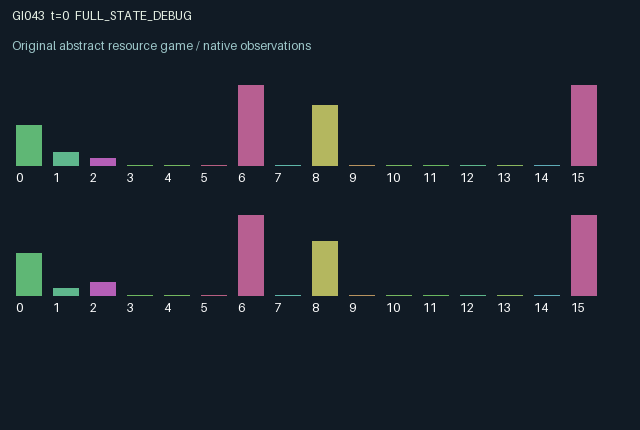

GI043 / LEGACY_ARRAY
astra-d2-00043: Delayed exposure, protection and reciprocal care
2 agents5 actions16 observation columns32 original horizonRuntime: PASS
Release verification episode
Untrained uniform legal actions. Actual JAX state sampled along the full original episode; full-state debug camera. No human performance or learning claim.

Run this game
crucibles play --game 43
Start Python locally, then open the address printed by the terminal. Installation, multiplayer, takeover and keyboard controls →
Objective, rewards & ending
Exact task contract
{
"objective": "Accumulate original per-agent rewards under the interaction rules in mechanism.md.",
"natural_termination": "No early terminal; original t >= 32 horizon.",
"exact_transition_and_reward_source": "def raw_step(self, key, state, actions):\n resting = actions == 0\n working = actions == 1\n screening = (actions == 2) & (state[\"stock\"] >= 0.08) & (state[\"test_wait\"] == 0)\n vaccinating = (\n (actions == 3)\n & (state[\"stock\"] >= 0.25)\n & (state[\"vaccine_stage\"] == 0)\n & (state[\"immunity\"] < 0.9)\n )\n treating = (actions == 4) & (state[\"stock\"] >= 0.18)\n received_support = jnp.roll(treating, 1).astype(jnp.float32)\n other_working = jnp.roll(working, 1)\n contact = jnp.where(working & other_working, 1.0, jnp.where(working | other_working, 0.35, 0.05))\n spark = 0.08 * jax.random.bernoulli(key, p=0.08, shape=(2,)).astype(jnp.float32)\n exposure = (\n 0.3 * jnp.roll(state[\"load\"], 1) * contact + spark\n ) * (1.0 - state[\"immunity\"]) * state[\"susceptibility\"]\n latent = jnp.clip(\n exposure + 0.25 * state[\"latent\"] - 0.1 * received_support,\n 0.0,\n 1.0,\n )\n load = jnp.clip(\n 0.9 * state[\"load\"]\n + 0.65 * state[\"latent\"]\n - 0.11 * resting.astype(jnp.float32)\n - 0.18 * received_support\n - 0.05 * state[\"immunity\"],\n 0.0,\n 1.0,\n )\n immunity = jnp.clip(\n 0.94 * state[\"immunity\"]\n + 0.55 * (state[\"vaccine_stage\"] == 1).astype(jnp.float32),\n 0.0,\n 0.95,\n )\n work_gain = 0.35 * working.astype(jnp.float32) * (1.0 - state[\"load\"])\n delivered = state[\"test_wait\"] == 1\n rewards = jnp.clip(\n 0.55 * working.astype(jnp.float32) * (1.0 - state[\"load\"])\n - 0.35 * state[\"load\"]\n - 0.08 * screening.astype(jnp.float32)\n - 0.12 * vaccinating.astype(jnp.float32)\n - 0.1 * treating.astype(jnp.float32)\n + 0.08 * received_support * state[\"load\"],\n -1.0,\n 1.0,\n ).astype(jnp.float32)\n next_state = {\n \"t\": state[\"t\"] + jnp.array(1, dtype=jnp.int32),\n \"load\": load.astype(jnp.float32),\n \"latent\": latent.astype(jnp.float32),\n \"immunity\": immunity.astype(jnp.float32),\n \"vaccine_stage\": jnp.where(\n vaccinating, 2, jnp.maximum(state[\"vaccine_stage\"] - 1, 0)\n ).astype(jnp.int32),\n \"stock\": jnp.clip(\n state[\"stock\"]\n + work_gain\n + 0.08 * resting.astype(jnp.float32)\n - 0.02\n - 0.08 * screening.astype(jnp.float32)\n - 0.25 * vaccinating.astype(jnp.float32)\n - 0.18 * treating.astype(jnp.float32),\n 0.0,\n 2.0,\n ).astype(jnp.float32),\n \"susceptibility\": state[\"susceptibility\"],\n \"symptom\": jnp.clip((state[\"load\"] - 0.12) / 0.88, 0.0, 1.0).astype(jnp.float32),\n \"report\": jnp.where(delivered, state[\"test_sample\"], state[\"report\"]).astype(jnp.float32),\n \"report_age\": jnp.where(\n delivered, 2, jnp.minimum(state[\"report_age\"] + 1, 32)\n ).astype(jnp.int32),\n \"test_sample\": jnp.where(screening, state[\"load\"], state[\"test_sample\"]).astype(jnp.float32),\n \"test_wait\": jnp.where(screening, 2, jnp.maximum(state[\"test_wait\"] - 1, 0)).astype(jnp.int32),\n \"last_contact\": contact.astype(jnp.float32),\n \"last_gain\": work_gain.astype(jnp.float32),\n \"last_work\": working.astype(jnp.float32),\n \"last_support\": received_support,\n }\n done_all = next_state[\"t\"] >= 32\n dones = jnp.full((2,), done_all, dtype=jnp.bool_)\n info = {\"done_all\": done_all, \"legal_mask\": self.legal_actions(next_state)}\n return self.observe(next_state), next_state, rewards, dones, info"
}Declared per-step reward bounds: -1.0 to 1.0. Observability: source_defined.
Rules
Original mechanism document (historical status wording retained)
# astra-d2-00043: Delayed exposure, protection and reciprocal care This source is an abstract two-role contagion-and-production mechanism. It is not a calibrated biomedical model. Each role carries a hidden active burden, a latent exposure store, decaying protection, an optional pending protection dose and a resource stock. The actions are 0 rest, 1 communal work, 2 screen one's burden, 3 start delayed protection, and 4 provide treatment to the partner. Rest and work remain legal; screening, protection and treatment require resources and the relevant free slot. Current active burden lowers work output. Joint work creates the greatest cross-role contact; one worker creates intermediate contact and two nonworkers create small residual contact. Partner burden and contact jointly generate new latent exposure, attenuated by protection and private susceptibility, with a small key-derived external spark. The previous latent store raises the next active burden, so action-mediated contact has a delayed productivity cost. Rest and incoming care reduce active burden. Incoming care also reduces newly accumulated latent exposure, potentially lowering the recipient's later infectious externality back to the caregiver. Starting protection sets a countdown of 2. When that existing countdown later equals 1, protection increases and then decays over subsequent steps. Screening similarly stores an exact current sample in a delayed channel with a countdown of 2; it is revealed after two subsequent transitions. The report-age field begins at 32 to identify the absent initial report and resets to the two-transition delivery-lag label on delivery, then increments. Symptoms expose a thresholded one-transition-lagged active burden, not the hidden latent store. The 16 observations contain local stock, own and partner symptoms, own protection, protection countdown, the latest sampled report and its lag/age label, sample countdown, private susceptibility, previous contact level, work gain, own and partner previous work, received support, clock and role identifier. Current burden is not directly exposed, although work yield can disclose it on working steps. That information consequence is intentional and makes screening's value contingent on the work/rest history. The other agent's stock, susceptibility, pending sample and protection level are private. Reward combines bounded work productivity, an active-burden penalty, action costs and a small receiver benefit for incoming care. It is explicitly clipped to [-1,1]; resource gains and expenditures separately determine later action availability. Treatment offers an immediate external benefit and a possible delayed return via reduced partner transmission, while work offers immediate private production and creates exposure externalities. The familiar relation is a dynamic public-health/social-protection dilemma with latency and imperfect monitoring. The intended causal structure is latent-to-active propagation, action-mediated contact, delayed protection and reciprocal externalities of targeted care. No novelty theorem, mechanism eligibility, compiler success or learning effectiveness is claimed. The source retains A2/O16/U5, a scalar once-incremented clock, a 32-step terminal condition and the resulting terminal observations. No candidate execution or isolated validation was performed. This parentless proposal received only the supplied train-context author contract and code whitelist, with no parent or outcome feedback.
Commands
0Rest
1Work
2Screen infection
3Vaccinate
4Treat
Roles & abilities
agent_0 Original legacy agent; see mechanism and source
agent_1 Original legacy agent; see mechanism and source
Observation permissions
Training receives only the original observation rows. Role cameras use declared visibility; debug cameras are explicitly marked. Local benchmark records log debug exposure and role takeover history.
Exact observation layout
[
{
"slice": [
0,
16
],
"visibility": "exact original observe() below",
"source_code": "def observe(self, state):\n obs = jnp.zeros((2, 16), dtype=jnp.float32)\n obs = obs.at[:, 0].set(state[\"stock\"] / 2.0)\n obs = obs.at[:, 1].set(state[\"symptom\"])\n obs = obs.at[:, 2].set(jnp.roll(state[\"symptom\"], 1))\n obs = obs.at[:, 3].set(state[\"immunity\"])\n obs = obs.at[:, 4].set(state[\"vaccine_stage\"] / 2.0)\n obs = obs.at[:, 5].set(state[\"report\"])\n obs = obs.at[:, 6].set(state[\"report_age\"] / 32.0)\n obs = obs.at[:, 7].set(state[\"test_wait\"] / 2.0)\n obs = obs.at[:, 8].set(state[\"susceptibility\"] / 1.2)\n obs = obs.at[:, 9].set(state[\"last_contact\"])\n obs = obs.at[:, 10].set(state[\"last_gain\"] / 0.35)\n obs = obs.at[:, 11].set(state[\"last_work\"])\n obs = obs.at[:, 12].set(jnp.roll(state[\"last_work\"], 1))\n obs = obs.at[:, 13].set(state[\"last_support\"])\n obs = obs.at[:, 14].set(state[\"t\"] / 32.0)\n obs = obs.at[:, 15].set(jnp.array([-1.0, 1.0], dtype=jnp.float32))\n return obs"
}
]Entity visibility & attributes
[]
Actual verification & provenance
Per-game execution receipt
{
"game": "gi043",
"status": "PASS",
"verification_revision": 2,
"source_sha256": "18d9df71180dff92f3ddcbb67479129b8ceedd5cb3636c4a76ed76c29a690e68",
"seed": 20261101,
"runtime": {
"jax": "0.4.38",
"numpy": "1.26.4",
"devices": [
"TFRT_CPU_0"
]
},
"dimensions": {
"num_agents": 2,
"observation_size": 16,
"num_actions": 5,
"max_steps": 32
},
"checks": {
"eager_reset": {
"status": "PASS",
"seconds": 0.5338952541351318
},
"observation_spaces_legal_masks": {
"status": "PASS",
"seconds": 0.22063088417053223
},
"eager_step": {
"status": "PASS",
"seconds": 0.45561718940734863
},
"jit_reset": {
"status": "PASS",
"seconds": 0.2592639923095703
},
"jit_step": {
"status": "PASS",
"seconds": 0.2653391361236572
},
"eager_jit_integer_parity_float_measurement": {
"status": "PASS",
"seconds": 0.0005404949188232422
},
"jit_vmap_reset": {
"status": "PASS",
"seconds": 0.3517467975616455
},
"jit_vmap_step": {
"status": "PASS",
"seconds": 0.4811873435974121
},
"outer_autoreset_api": {
"status": "PASS",
"seconds": 0.7332808971405029
},
"full_original_horizon_episode_and_render": {
"status": "PASS",
"seconds": 1.980609655380249
}
},
"human_scores": null,
"browser_controls": "PENDING",
"failures": [],
"elapsed_seconds": 5.859200477600098,
"float_parity_max_abs": 0.0,
"numerical_parity": "EXACT",
"raw_terminal_absorbing": "NOT_PART_OF_ORIGINAL_LEGACY_CONTRACT",
"terminal_outer_reset": "PASS",
"episode_steps": 32,
"scripted_random_returns": [
0.34579315036535263,
1.9150076061487198
],
"terminal": true,
"demo_information": "FULL_STATE_DEBUG",
"demo_frames": 33,
"render_roles_checked": 2
}Chromium control verification
{
"game": "gi043",
"status": "PASS",
"human_scores": null,
"engineering": true,
"checks": [
"catalog_selected_and_real_native_reset",
"dom_queue_and_native_step",
"second_participant_ownership_and_native_joint_step",
"all_roles_individually_controllable_no_role_cap",
"explicit_debug_camera",
"release_to_pure_ai_without_reset",
"close_session_preserves_log"
],
"ui_sha256": "96243f9de144b80b5e20a114330e2206bdcd58d3efc9c6f13bbc08b95cacc14d",
"keyboard": "NO_LEGAL_CARDINAL_COMMAND_FOR_ROLE0_AT_RESET",
"seconds": 4.10533332824707
}Original identity and file hashes
{
"id": 43,
"key": "gi043",
"title": "astra-d2-00043: Delayed exposure, protection and reciprocal care",
"summary": "",
"tags": [],
"family": "legacy_array",
"dimensions": {
"num_agents": 2,
"observation_size": 16,
"num_actions": 5,
"max_steps": 32
},
"source_sha256": "18d9df71180dff92f3ddcbb67479129b8ceedd5cb3636c4a76ed76c29a690e68",
"manifest_sha256": "9fd19dd5aac671b38d6c3be625f8780ce73bdb40b0f6a44f3f738eb3a670ea8e",
"files": [
{
"file": "candidate.py",
"sha256": "18d9df71180dff92f3ddcbb67479129b8ceedd5cb3636c4a76ed76c29a690e68",
"bytes": 6720,
"origin": "work/exp_2/astra_generation/discovery_v2/initial/candidate_00043/attempt_00/candidate.py"
},
{
"file": "mechanism.md",
"sha256": "318fe5fbcf6dd896186843acc183dda3fd46fc20146b4ac9bebdbc278506b697",
"bytes": 3510,
"origin": "work/exp_2/astra_generation/discovery_v2/initial/candidate_00043/attempt_00/mechanism.md"
}
],
"original_status": "LEGACY_SOURCE",
"original_saved_replay": false,
"release_validation": "PASS",
"human_scores": null,
"browser_validation": "PASS"
}